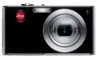

器材库 > 不可换镜头数码相机 > C-LUX 3

规格总览
发布日期
2008-09-15
影像规格
影像传感器
CCD
影像传感器尺寸
1/2.33英寸
总像素
1070万
有效像素
1010万
静态图像尺寸
3648×2736
静态图像格式
JPEG
画幅比
4:3
镜头和对焦
镜头结构
7片/6组
非球面镜片
4片
焦距
4.4mm-22mm
等效35mm画幅焦距
25mm-125mm
最大光圈
f/2.8-5.9
光学变焦
5倍
最近对焦距离
广角50cm, 望远100cm, 微距5cm
对焦模式
9点、3点、1点、人面对焦
曝光控制
测光模式
评价测光
快门速度
8 ～ 1/2000
曝光补偿
±2EV以1/3EV级调整
闪光灯
内置闪光灯
固定
闪光模式
自动
取景规格
LCD类型
彩色TFT LCD
LCD尺寸
2.5英寸
LCD像素
23万
文件输入/输出
内置存储容量
50MB
存储卡
SD/SDHC, MMC
数据接口
USB
视频/音频接口
AV 输出
外观
颜色
银色, 黑色
尺寸
94.7 x 51.9 x 22.0mm
重量
125g
情系摄影2011-01-09 12:51
南竹2009-06-21 20:345 分
操作性 5.00功能性 5.00美观性 5.00趣味性 5.00耐用性 5.00性价比 5.00解像力 5.00色彩还原 5.00
产品图 / 样片
c-lux3-01
评测 / 相关文章
- 详细内容 （存档）
- ［资讯］徕卡发布限量樱桃小丸子C-LUX3 （存档）
- ［资讯］徕卡C-LUX3——数码相机小精灵 （存档）
相关文章
- ［资讯］徕卡发布限量樱桃小丸子C-LUX3 （存档）
- ［资讯］徕卡C-LUX 3 （存档）
- ［资讯］徕卡C-LUX3——数码相机小精灵 （存档）